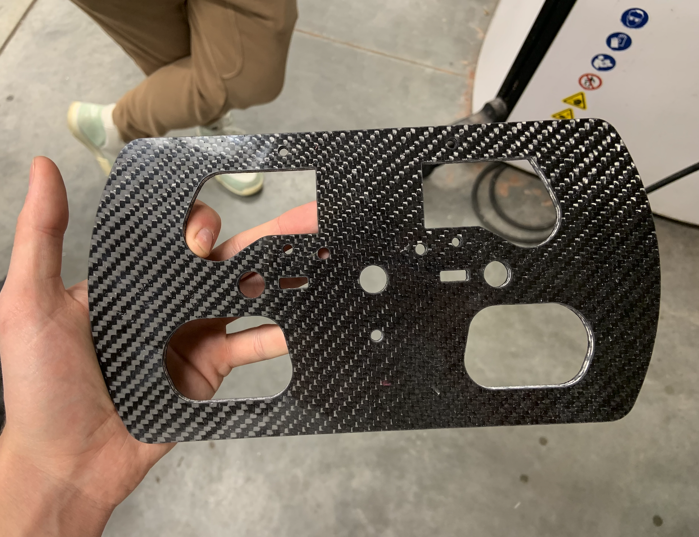
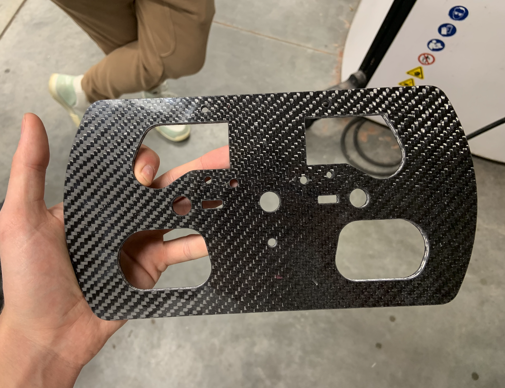
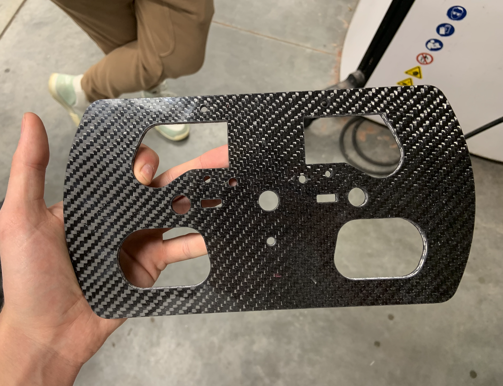

This subsystem encompasses brakes, controls, & ergonomics. We use Wilwood brake calipers with laser cut rotors. Our steering wheel has paddle shifters for sequential pneumatic shifting. Cockpit design is a new goal for this season, specifically making it more adjustable for each driver. We currently have an adjustable pedal chassis with carbon fiber foot cups.

Alex is a sophomore mechanical engineering student. He joined the team his freshman year and worked closely with our previous suspension lead (Spencer Goldstein, Spring 2023) and previous brakes & controls lead (Aaron Jewett). His main goal for this season is cockpit design, specifically making it more adjustable for each driver. Alex is also a member of our welding team and fabricates the chassis and suspension components.